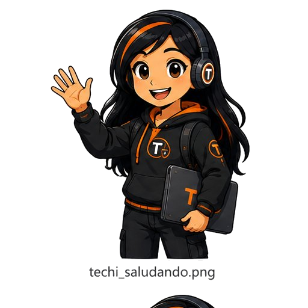
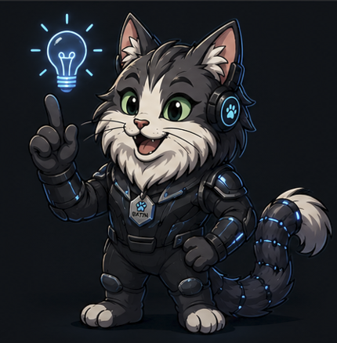
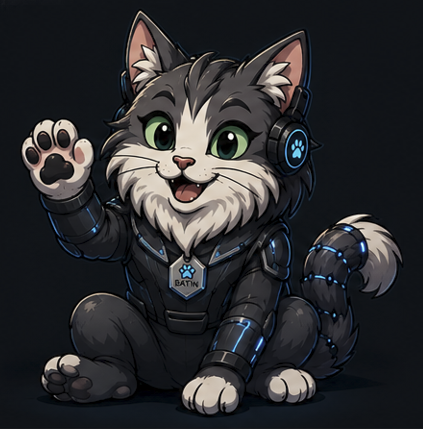
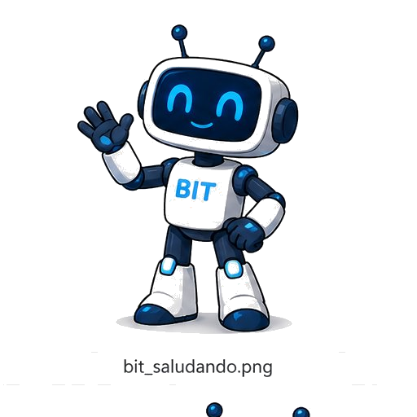
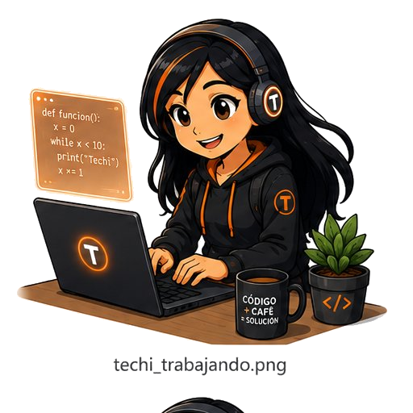

Las empresas toman decisiones con los datos que tú procesas. Una fórmula mal escrita, una base de datos mal diseñada, una presentación confusa — tienen consecuencias reales. Este sitio existe para que estés a la altura.
// misión activa
> Aprender
> Practicar
> Transformar
> Compartir
¡Ese es el código!


Gatiel · Guardián del Sistema
No creemos que la tecnología sea neutral. Tampoco creemos que el progreso sea automático.Leer el Manifiesto completo →
Creemos que todo sistema educa, incluso cuando dice que solo optimiza. Que todo algoritmo evalúa, aunque no lo declare. Y que toda decisión técnica es, en el fondo, una decisión humana.
Porque el futuro no se programa solo. Se enseña, se evalúa y se decide.
No estás solo en esto. Tres guías te acompañan en cada etapa del camino — cada uno con su estilo, cada uno con su rol.

El gato cibernético gris y blanco. Antes de escribir código, te invita a preguntarte para qué. Guía El Sistema, los Ancestros y la IA crítica.

Siempre listo para ayudar, enseñar y acompañarte paso a paso. Guía las asignaturas técnicas, los ejercicios y los procedimientos.

Es una de ustedes. Curiosa, perseverante y apasionada por aprender. Guía los proyectos, la identidad técnica y el legado del BATIN.
El sitio está organizado como un recorrido de transformación, no como un menú de materiales. Ingresa por donde lo necesites.
Los Ancestros, el Manifiesto, Misión Hardware, IA crítica. La base cultural del BATIN.
5 rutas de asignaturas. Por tema, con nivel Bloom, con PDFs y ejercicios.
ICIENTEC, Proyecto de Promoción, prototipos y sistemas reales.
Producciones destacadas, defensas, galería de proyectos y legado de promociones.
El Google Sites original con todos los materiales y presentaciones de clase.